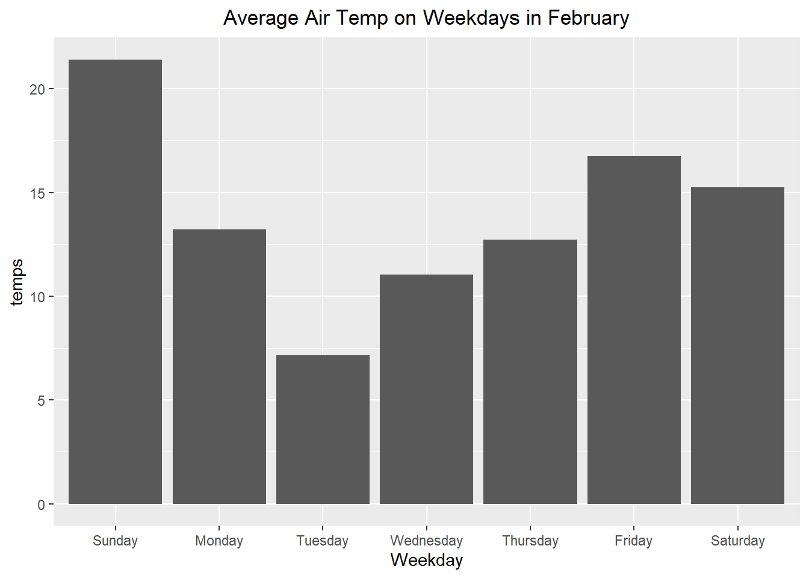
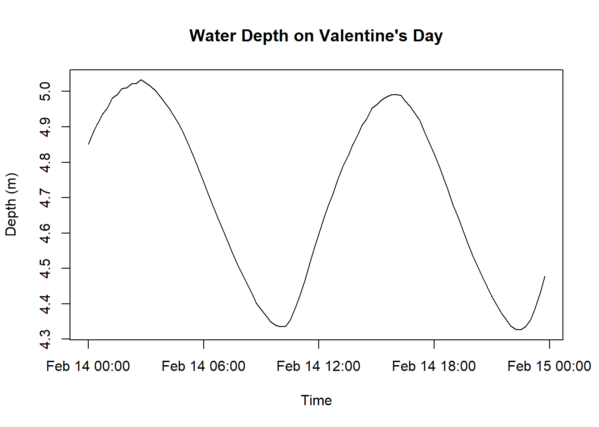
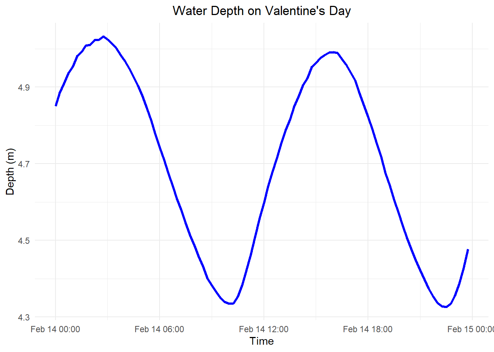
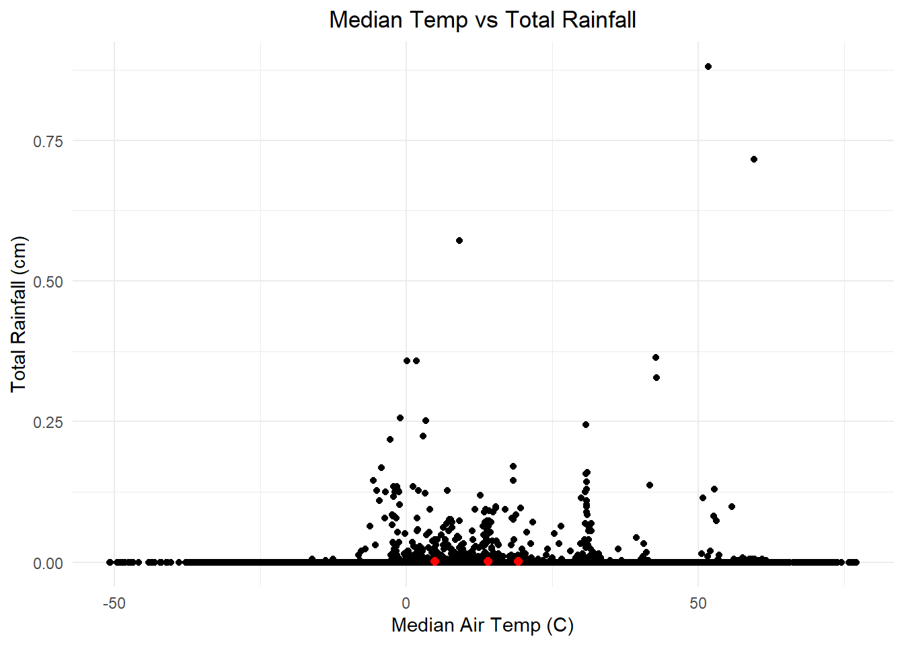
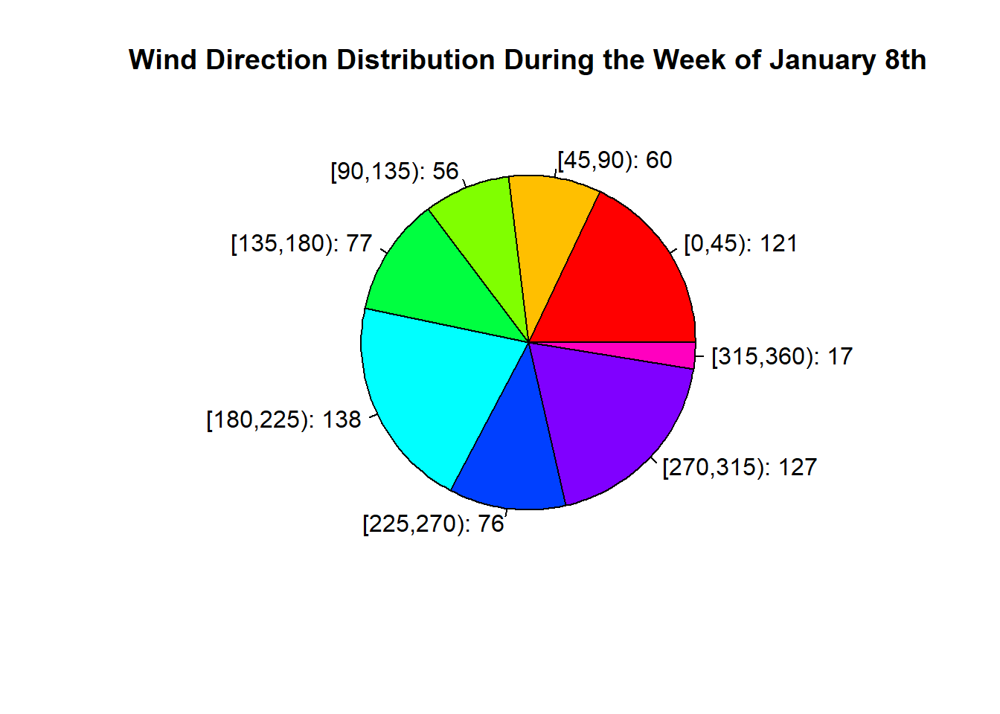

ggplot( df, aes( x = Weekday, y = temps) ) +geom_col() +labs( title ="Average Air Temp on Weekdays in February" ) +theme( plot.title =element_text( hjust =0.5 ) )

Create a Line Graph for Water Depth on Valentine’s Day Using Basic Plots
rice |>filter( Month =="February", Day =="14") |>group_by( Date ) |>summarize( depth =mean( Depth_m ),date = Date ) -> dfplot( df$date, df$depth,type ="l",ylab ="Depth (m)",xlab ="Time",main ="Water Depth on Valentine's Day" )

Create a Line Graph for Water Depth on Valentine’s Day Using ggplot2
rice |>filter( Month =="February", Day =="14" ) |>group_by( Date ) |>summarize( depth =mean( Depth_m ) ) -> dfggplot( df, aes( x = Date, y = depth) ) +geom_line( color ="blue", linewidth =1.2 ) +labs(title ="Water Depth on Valentine's Day", x ="Time", y ="Depth (m)" ) +theme_minimal() +theme( plot.title =element_text( hjust =0.5 ) )

Create a Scatter Plot for Air Temp vs Rainfall Using Basic Plots
Create a Scatter Plot for Air Temp vs Rainfall Using ggplot2
rice |>group_by( Date ) |>summarize( temp =median( AirTempC, na.rm =TRUE ),rain =sum( Rain_cm, na.rm =TRUE ) ) -> dfdf |>group_by( Month = lubridate::month(Date, label =TRUE ) ) |>summarize(mean_temp =mean( temp, na.rm =TRUE ),mean_rain =mean( rain, na.rm =TRUE ) ) -> centroidsggplot( df, aes( x = temp, y = rain ) ) +geom_point() +geom_point( data = centroids, aes( x = mean_temp, y = mean_rain ),color ="red", size =2, shape =16 ) +labs( title ="Median Temp vs Total Rainfall",x ="Median Air Temp (C)",y ="Total Rainfall (cm)") +theme_minimal() +theme( plot.title =element_text( hjust =0.5 ) )

Create a Pie Chart for Wind Direction (Week of Jan 8) Using Basic Plots
rice |>filter( month( Date ) ==1&day( Date ) >=7&day( Date ) <=13 ) |>group_by( Date ) |>summarize( wind_direction =mean(WindDir, na.rm =TRUE ) ) -> dfbreaks <-seq( 0, 360, by =45 ) df$wind_direction_category <-cut( df$wind_direction, breaks = breaks, right =FALSE )category_counts <-table( df$wind_direction_category )pie( category_counts, main ="Wind Direction Distribution During the Week of January 8th",col =rainbow( length(category_counts ) ),labels =paste0( names( category_counts ), ": ", category_counts ) )

Create a Pie Chart for Wind Direction (Week of Jan 8) Using ggplot2
rice |>filter( month( Date ) ==1&day( Date ) >=7&day( Date ) <=13 ) |>group_by( Date ) |>summarize( wind_direction =mean(WindDir, na.rm =TRUE ) ) -> dfbreaks <-seq( 0, 360, by =45 ) df$wind_direction_category <-cut( df$wind_direction, breaks = breaks, right =FALSE )category_counts <- df |>group_by( wind_direction_category ) |>summarize( count =n() )ggplot( category_counts, aes(x ="", y = count, fill = wind_direction_category ) ) +geom_bar( stat ="identity", width =1 ) +coord_polar( "y" ) +labs( title ="Wind Direction Distribution During the Week of January 8th",fill ="Wind Direction (Degrees)" ) +theme_minimal()